토목산업기사 (2020-08-22 기출문제)
1과목: 응용역학
1. 아래 그림과 같은 캔틸레버 보에서 C점의 휨보멘트는?
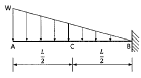
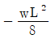
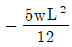
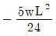
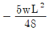
(정답률: 52%)

2. P=120kN의 무게를 매달은 그림과 같은 구조물에서 T1이 받는 힘은?
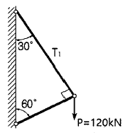
- 103.9kN(인장)
- 103.9kN(압축)
- 60kN(인장)
- 60kN(압축)
(정답률: 58%)
3. 다음 중 단면계수의 단위로서 옳은 것은?
- ㎝
- cm2
- cm3
- cm4
(정답률: 64%)
4. 지름 200mm의 통나무에 자중과 하중에 의한 9kNㆍm의 외력 모멘트가 작용한다면 최대 휨응력은?
- 11.5MPa
- 15.4MPa
- 20.0MPa
- 21.9MPa
(정답률: 45%)
5. 단면이 150mm×150mm인 정사각형이고, 길이가 1m인 강재에 120kN의 압축력을 가했더니 1mm가 줄어 들었다. 이 강재의 탄성계수는?
- 5333.3MPa
- 5333.3kPa
- 8333.3MPa
- 8333.3Kpa
(정답률: 55%)
6. 그림에서 최대응력은?
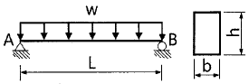
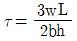
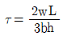
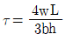
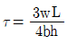
(정답률: 48%)
7. 그림과 같은 켄틸레버 보에서 보의 B점에 집중하중 P와 모멘트 Mo가 작용하고 있다. B점에서의 처짐각(θb)은 얼마인가? (단, 보의 EI는 일정하다.)
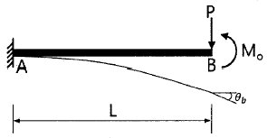
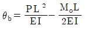
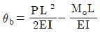
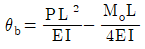
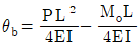
(정답률: 52%)
8. 기둥의 해석에 사용되는 단주와 장주의 구분에 사용되는 세장비에 대한 설명으로 옳은 것은?
- 기둥단면의 최소폭을 부재의 길이로 나눈 값이다.
- 기둥단면의 단면 2차모멘트를 부재의 길이로 나눈 값이다.
- 기둥부재의 길이의 단면의 최소회전반경으로 나눈 값이다.
- 기둥단면의 길이를 단면 2차모멘트로 나눈 값이다.
(정답률: 54%)
9. 지름이 D인 원형 단면의 도심 축에 대한 단면 2차 극모멘트는?
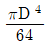
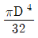
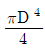
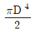
(정답률: 46%)
10. 아래 그림과 같은 단면에서 도심의 위치 (
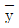
)는?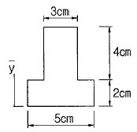
- 2.21㎝
- 2.64㎝
- 2.96㎝
- 3.21㎝
(정답률: 58%)
11. 그림과 같은 30°경사진 언덕에 40kN의 물체를 밀어 올릴 때 필요한 힘 P는 최소 얼마 이상이어야 하는가? (단, 마찰계수는 0.3이다.)
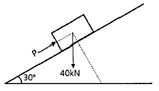
- 20.0kN
- 30.4kN
- 34.6kN
- 35.0kN
(정답률: 43%)
12. 그림과 같은 역계에서 협력 R의 위치 x의 값은?
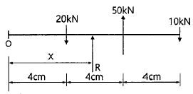
- 6㎝
- 8㎝
- 10㎝
- 12㎝
(정답률: 54%)
13. 아래 그림에서 연행 하중으로 인한 A점의 최대 수직반력(VA)은?
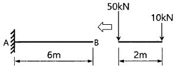
- 60kN
- 50kN
- 30kN
- 10kN
(정답률: 51%)
14. 그림과 같은 트러스에서 사재(斜材) D의 부재력은?
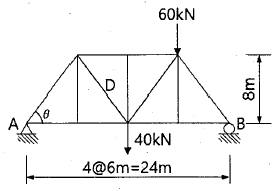
- 31.12kN
- 43.75kN
- 54.65kN
- 65.22kN
(정답률: 48%)
15. 1방향 편심을 갖는 한 변이 30㎝인 정사각형 단주에서 100kN의 편심하중이 작용할 때, 단면에 인장력이 생기지 않기 위한 편심(e)의 한계는 기둥의 중심에서 얼마나 떨어진 곳인가?
- 5.0㎝
- 6.7㎝
- 7.7㎝
- 8.0㎝
(정답률: 48%)
16. 그림과 같은 단순보에서 각 지점의 반력을 계산한 값으로 옳은 것은?
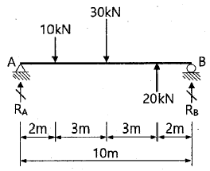
- RA=10kN, RB=10kN
- RA=14kN, RB=6kN
- RA=1kN, RB=19kN
- RA=19kN, RB=1kN
(정답률: 62%)
17. 그림과 같은 게르버 보의 A점의 전단력은?
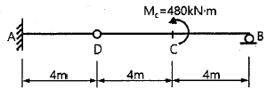
- 40kN
- 60kN
- 120kN
- 240kN
(정답률: 44%)
18. 양단이 고정되어 있는 길이 10m의 강(鋼)이 15℃에서 40℃로 온도가 상승할 때 응력은? (단, E=2.1×105MPa, 선팽창계수 α=0.00001/℃)
- 47.5MPa
- 50.0MPa
- 52.5MPa
- 53.8MPa
(정답률: 49%)
19. 그림과 같은 3힌지 라멘에 등분포 하중이 작용할 경우 A점의 수평반력은?
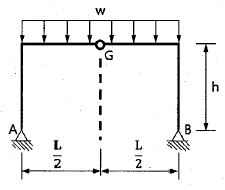
- 0
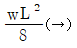
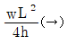
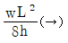
(정답률: 45%)
20. 길이 L인 단순보에 등분포 하중(w)이 만제되었을 때 최대 처짐각은 얼마인가? (단, 보의 EI는 일정하다.)
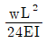
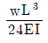
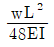
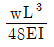
(정답률: 30%)
2과목: 측량학
21. 수평각 측정법 중에서 가장 정확한 값을 얻을 수 있는 방법은?
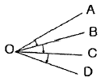
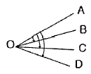
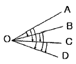
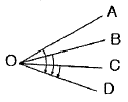
(정답률: 54%)
22. 수준측량 장비인 레벨의 기포관이 구비해야할 조건으로 가장 거리가 먼 것은?
- 유리관의 질은 오랜 시간이 흘러도 내부 액체의 영향을 받지 않을 것
- 유리관의 곡률반지름이 중앙부위로 갈수록 작아질 것
- 동일 경사에 대해서는 기포의 이동이 동일할 것
- 기포의 이동이 민감할 것
(정답률: 43%)
23. 완곡선에 대한 설명으로 옳지 않은 것은?
- 완화곡선의 곡선 반지름(R)은 시점에서 무한대이다.
- 완화곡선의 접선은 시점에서 직선에 접한다.
- 완화곡선의 종점에 있는 캔트(cant)는 원곡선의 캔트(cant)와 같다.
- 완화곡선의 길이(L)는 도로폭에 따라 결정된다.
(정답률: 33%)
24. 우리나라의 노선측량에서 고속도로에 주로 이용되는 완화곡선은?
- 렘니스케이트 곡선
- 클로소이드 곡선
- 2차 포물선
- 3차 포물선
(정답률: 53%)
25. 지상고도 2000m의 비행기 위에서 초점거리 152.7mm의 사진기로 촬영한 수직항공사진에서 길이 50m인 교량의 사진상의 길이는?
- 2.6mm
- 3.8mm
- 26mm
- 38mm
(정답률: 41%)
26. 항공사진측량의 특징에 대한 설명으로 틀린 것은?
- 분업에 의해 작업하므로 능률적이다.
- 정밀도가 대체로 균일하며 상대오차가 양호하다.
- 축척 변경이 용이하다.
- 대축척 측량일수록 경제적이다.
(정답률: 45%)
27. 노선의 횡단측량에서 No.1+15m 측점의 절토 단면적이 100m2, No.2 측점의 절토 단면적이 40m2일 때 두 측점 사이의 절토량은? (단, 중심말뚝 간격=20m)
- 350m3
- 700m3
- 1200m3
- 1400m3
(정답률: 40%)
28. 교점(I.P.)의 위치가 기점으로부터 200.12m, 곡선반지름 200m, 교각 45°00′인 단곡선의 시단현의 길이는? (단, 측점간 거리는 20m로 한다.)
- 2.72m
- 2.84m
- 17.16m
- 17.28m
(정답률: 30%)
29. 기지점 A로부터 기지점 B에 결합하는 트래버스측량을 실시하여 X죄표의 결합오차 +0.15m. Y좌표의 결합오차 +0.20m를 얻었다면 이 측량의 결합비는? (단, 전체 노선 거리는 2750m이다.)
- 1/18330
- 1/13750
- 1/12000
- 1/11000
(정답률: 38%)
30. 등고선의 성질에 대한 설명으로 틀린 것은?
- 등고선은 도면 내ㆍ외에서 반드시 폐합니다.
- 최대 경사방향은 등고선과 직각방향으로 교차한다.
- 등고선은 급경사지에서는 간격이 넓어지며, 완경사지에서는 간격이 좁아진다.
- 등고선은 경사가 같은 곳에서는 간격이 같다.
(정답률: 51%)
31. 폐합 트래비스측량에서 각 관측의 정밀도가 거리 관측의 정밀도보다 높을 때 오차를 배분하는 방법으로 옳은 것은?
- 해당 측선 길이에 비례하여 배분한다.
- 해당 측선 길이에 반비례하여 배분한다.
- 해당 측선의 위거와 경거의 크기에 비례하여 배분한다.
- 해당 측선의 위거와 경거의 크기에 반비례하여 배분한다.
(정답률: 50%)
32. 측선  의 관측거리가 100m 일 때, 다음 중 B점의 X(N)좌표 값이 가장 큰 경우는? (단, A의 좌표 XA=0m, YA=0m)
의 관측거리가 100m 일 때, 다음 중 B점의 X(N)좌표 값이 가장 큰 경우는? (단, A의 좌표 XA=0m, YA=0m)
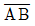
의 방위각(a)=30° 의 방위각(a)=60°
의 방위각(a)=60° 의 방위각(a)=90°
의 방위각(a)=90° 의 방위각(a)=120°
의 방위각(a)=120°
(정답률: 49%)
33. 축적 1:50000 지도상에서 4cm2인 영역의 지상에서 실제면적은?
- 1km2
- 2km2
- 100km2
- 200km2
(정답률: 44%)
34. 그림과 같이 A점에서 편심점 B′점을 시준하여 TB′를 관측했을 때 B점의방향각 TB를 구하기 위한 보정량 x의 크기를 구하는 식으로 옳은 것은?
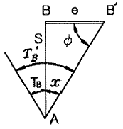
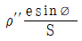
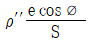
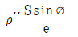
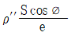
(정답률: 43%)
35. 축적 1:5000 지형도(30㎝×30㎝)를 기초로 하여 축적이 1:50000인 지형도(30㎝×30㎝)를 제작하기 위해 필요한 1:5000 지형도의 수는?
- 50장
- 100장
- 150장
- 200장
(정답률: 54%)
36. 기하학적 측지학에 속하지 않는 것은?
- 측지학적 3치원 위치의 결정
- 면적 및 체적의 산정
- 길이 및 시(時)의 결정
- 지구의 극운동과 자전운동
(정답률: 51%)
37. 교호수준측량에서 A점의 표고가 60.00m일 때, a1=0.75m, b1=0.55m, a2=1.45m, b2=1.24m이면 B점의 표고는?
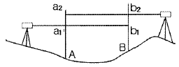
- 60.2⑤m
- 60.210m
- 60.215m
- 60.200m
(정답률: 44%)
38. 곡선반지름이 200m인 단곡선을 설치하기 위하여 그림과 같이 교각 I를 광측할 수 없어 ∠AA′B′, ∠BB′A′의 두 각을 관측하여 각각 141°40′과 90°20′의 값을 얻었다. 교각 I는? (단, A:곡선시점, B:곡선중심)
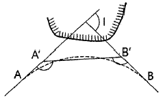
- 38°20′
- 38°40′
- 89°40′
- 128°00′
(정답률: 43%)
39. 거리측량의 허용정밀도를 1/105이라 할 때, 반지름 몇 ㎞까지를 평면으로 볼 수 있는가? (단, 지구반지름 r=6400㎞이다.)
- 11㎞
- 22㎞
- 35㎞
- 70㎞
(정답률: 36%)
40. 수준측량에서 전시와 후시의 시준거리를 같게하여 소거할 수 있는 오차는?
- 표적 눈금의 오독으로 발생하는 오차
- 표척을 연직방향으로 세우지 않아 발생하는 오차
- 시준축이 기포관축과 평행하지 않기 때문에 발생하는 오차
- 시차(조준의 불완전)에 의해 발생하는 오차
(정답률: 46%)
3과목: 수리학
41. 유량 Q, 유속 V, 단면적 a, 도심거리 hG라 할 때 충력치(M)의 값은? (단, 충력치는 비력이라고도 하며, η: 운동량 보정계수, g: 중력가속도, W: 물의 중량, w: 물의 단위중량)
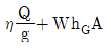
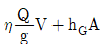
(정답률: 45%)
42. 지하수의 유속공식 V=KI에서 K의크기와 관계가 없는 것은?
- 지하수위
- 흙의 입경
- 흙의 공극률
- 물의 점성계수
(정답률: 45%)
43. 뉴턴 유체(Newtonian fluids)에 대한 설명으로 옳은 것은?
- 물이나 공기 등 보통의 유체는 비튜턴 유체이다.
- 각 변형률 ()의 크기에 따라 선형으로 점도가 변한다.
- 전단응력(τ)과 각 변형률(
 )의 관계는 원점을 지나는 직선이다.
)의 관계는 원점을 지나는 직선이다. - 유체가 압력의 젼화에 따라 밀도의 변화를 무시할 수 없는 상태가 된 유체응 의미한다.
(정답률: 42%)
44. Chezy 공식의 평균유속계수 C와 Manning 공식의 조도계수 n 사이의 관계는?
(정답률: 48%)
45. 관내를 유속 V로 물이 흐르고 있을 때 밸브등의 급격한 폐쇄 등레 의하여 유속이 즐어들면 이에 따라 관내의 압력 변화가 생기는데 이것을 무엇이라 하는가?
- 정압
- 수격압
- 동업력
- 정체압력
(정답률: 52%)
46. 보통 정도의 정밀도를 필요로 하는 관수로 계산에서 마칠 이외의 손실을 무시할 수 있는 L/D의 값으로 옳은 것은? (단, L: 관의 길이, D: 관의지름)
- 500이상
- 1000이상
- 2000이상
- 3000이상
(정답률: 33%)
47. 레이놀즈의 실험으로 얻은 Reynolds 수에 의해서 구별할 수 있는 흐름은?
- 층류와 난류
- 정류와 부정류
- 상류와 사류
- 등류와 부등류
(정답률: 51%)
48. 10m3/sec의 유량을 흐르게 할 수리학적으로 가장 유리한 직사각형 개수로 단면을 설계할 때 개수로 폭은? (단, Manning 공식을 이용하며, 수로경사 i=0.001, 조도계수 n=0.020이다.)
- 2.66m
- 3.16m
- 3.66m
- 4.16m
(정답률: 33%)
49. 물의 체적 탄성계수 E=2×104kg/cm2일 때 물의 체적을 1% 감소시키기 위해 가해야할 압력은?
- 2×10kg/m2
- 2×10kg/cm2
- 2×102kg/m2
- 2×102kg/cm2
(정답률: 37%)
50. 집중호우로 인한 홍수 발생 시 지표수의 흐름은?
- 등류이고, 정상류이다.
- 등류이고, 비정상류이다.
- 부등류이고, 정상류이다.
- 부등류이고, 비정상류이다.
(정답률: 47%)
51. 그림과 같은 2m의 직사각형 판에 작용하는 수압 분포도는 삼각형 분포도를 얻었는데, 이 물체에 작용하는 전수압( ㉠ )과 작용점의 위치( ㉡ )로 옳은 것은? (단, 물의 단위중량은 9.81kN/m3이며, 작용의 위치는 수면을 기준으로 한다.)
- ㉠: 100.25kN, ㉡: 1.7m
- ㉠: 145.25kN, ㉡: 3.3m
- ㉠: 200.25kN, ㉡: 1.7m
- ㉠: 245.25kN, ㉡: 3.3m
(정답률: 28%)
52. 투수계수 0.5m/sec, 제외지 수위 6m, 제내지 수위 2m, 침투수가 통하는 길이 50m일 때 하천 제방단면 1m당 누수량은?
- 0.16m3/sec
- 0.32m3/sec
- 0.96m3/sec
- 1.28m3/sec
(정답률: 27%)
53. 베르누이 정리를 압역의 항으로 표시할 때, 동압력(dynamic pressure) 항에 해당되는 것은?
- P
- 1/2ρV2
- ρgz
- V2/2g
(정답률: 36%)
54. 사이폰의 이론 중 동수경사선에서 정점부까지의 이론적 높이 ( ㉠ )와 실제 설계 시 적용하는 높이의 범위 ( ㉡ )로 옳은 것은?
- ㉠: 7.0m, ㉡: 5.6~6.0m
- ㉠: 8.0m, ㉡: 6.4~6.8m
- ㉠: 9.0m, ㉡: 6.5~7.0m
- ㉠: 10.3m, ㉡: 8.0~8.5m
(정답률: 38%)
55. 지름 D인 관을 배관할 때 마찰 손실이 elbow에 의한 손실과 같도록 직선 관을 배관한다면 직선 관의 길이은? (단, 관의 마찰손실계수 f=0.025, elbow에 의한 미소손실계수 K=0.9)
- 4D
- 8D
- 36D
- 42D
(정답률: 40%)
56. 그림과 같은 작은 오리피스에서 유속은? (단, 유속계수 Cv=0.9이다.)
- 8.9m/s
- 9.9m/s
- 12.6m/s
- 14.0m/s
(정답률: 40%)
57. 수면 아래 20m 지점의 수압으로 옳은 것은? (단, 물의 단위중량은 9.81kN/m3이다.)
- 0.1MPa
- 0.2MPa
- 1.0MPa
- 20MPa
(정답률: 31%)
58. 수로 폭 4m, 수심 1.5m인 직사각형 단면에서 유량이 24m3/sec일 때 Froude 수(Fr)는?
- 0.74
- 0.85
- 1.04
- 1.08
(정답률: 40%)
59. 모세관 현상에서 모세관고(h)와 관의 지름(D)의 관계로 옳은 것은?
- h는 D에 비례한다.
- h는 D2에 비례한다.
- h는 D-1에 비례한다.
- h는 D-2에 비례한다.
(정답률: 36%)
60. 수축단면에 관한 설명으로 옳은 것은?
- 오리피스의 유출수맥에서 발생한다.
- 상류에서 사류로 변화할 때 발생한다.
- 사류에서 상류로 변화할 때 발생한다.
- 수축단면에서의 유속을 오리피스의 평균유속이라 한다.
(정답률: 36%)
4과목: 철근콘크리트 및 강구조
61. 그림에 나타난 단철근 직사각형 보가 공칭 휨강도(Mn)에 도달할 때 압축 측 콘크리트가 부담하는 압축력은 약 얼마인가? (단, 철근 D22 4본의 단면적은 1548mm2, fck=28MPa, fy=350MPa이다.)
- 542kN
- 637kN
- 724kN
- 838kN
(정답률: 33%)
62. 일단 정착의 포스트텐션 부재에서 정착부 활동량이 3mm 생겼다. PS 강재의 길이가 40m, 초기 인장응력이 1000MPa일 때 PS 강재의 프리스트레스의 감소량(△fp)은? (단, PS 강재의 탄성계수 Ep=2.0×105MPa이다.)
- 15MPa
- 30MPa
- 45MPa
- 60MPa
(정답률: 29%)
63. 강도설계법으로 부재를 설계할 때 사용하중에 하중계수를 곱한 하중을 무엇이라 하는가?
- 작용하중
- 기준하중
- 지속하중
- 계수하중
(정답률: 50%)
64. 그림과 같은 단철근 직사각형 단면보에서 등가직사각형 응력블록의 깊이(a)는? (단, fck=28MPa, fy=350MPa이다.)
- 42mm
- 49mm
- 52mm
- 59mm
(정답률: 48%)
65. 철근콘크리트 1방향 슬래브에 대한 설명으로 틀린 것은?
- 슬래브의 두께는 최소 50mm 이상으로 하여야 한다.
- 슬래브의 정모멘트 철근 및 부모멘트 철근의 중심 간격은 위험단계에서는 슬래브 두께의 2배 이하여야 하고, 또한 300mm이하로 하여야 한다.
- 4변에 의해 지지되는 1방향 슬래브 중에서 단변에 재한 장변의 비가 2배를 넘으면 1방향 슬래브로서 해석한다.
- 1방향 슬래브에서는 정모멘트 철근 및 부모멘트 철근에 직각방향으로 수축ㆍ온도철근을 배치하여야 한다.
(정답률: 44%)
66. P=400kN의 인장력이 작용하는 판 두께 10mm인 철판에 ø19mm인 리벳을 사용하여 접합할 때 소요 리벳 수는? (단, 허용전단응력(τa)은 75MPa, 허용지압응력(Qb)은 150MPa 이다.)
- 15개
- 17개
- 19개
- 21개
(정답률: 35%)
67. 프리스트레스의 손실 중 시간의 경과에 의해 발생하는 것은?
- 정착장치의 활동
- 콘크리트의탄성수축
- 긴장재 응력의 릴랙세이션
- 포스트텐션 긴장재와 덕트 사이의 마찰
(정답률: 42%)
68. 콘크리트구조 강도설계법에서 콘크리트의 설계기준압축강도(fck)가 45MPa일 때 β1의 값은? (단, β1은 a=β1c에서 사용되는 계수이다.)
- 0.714
- 0.731
- 0.747
- 0.761
(정답률: 45%)
69. 강도설계법에 의한 나선철근 압축부재의 공칭 축강도(Pn)의 값은? (단, Ag=160000mm2, Ast=6-D32=4765mm2, fck=22MPa, fy=350MPa이다.)
- 3567kN
- 3885kN
- 4428kN
- 4967kN
(정답률: 44%)
70. 리벳의 허용강도를 결정하는 방법으로 옳은 것은?
- 전단강도와 압축강도로 각각 결정한다.
- 전단강도와 압축강도의 평균값으로 결정한다.
- 전단강도와 지압강도 중 큰 값으로 힌디.
- 전단강도와 지압강도 중 작은 값으로 힌디.
(정답률: 38%)
71. 그림과 같은 경간 8m인 직사각형 단순보에 등분포하중(자중포함) w=30kN/m가 작용하며 PS 강재는 단면 도심에 배치되어 있다. 부재의 연단에 인장응력이 발생하지 않게하려 할 때, PS 강재에 도입되어야할 최소한 긴장력(P)은?
- 1800kN
- 2400kN
- 2600kN
- 3100kN
(정답률: 31%)
72. 전단철근이 부담하는 전단력(Vs)이 200kN일 때 D13 철근율 사용하여 수직스터럽으로 전단 보강하는 경우 배치간격은 최대 얼마 이하로 하여야 하는가? (단, D13의 단면적 127mm2, fck=28MPa, fy=400MPa, bw=400mm, d=600mm, 보통중량콘크리트이다.)
- 600mm
- 300mm
- 255mm
- 175mm
(정답률: 35%)
73. 옹벽의 설계에 대한 일반적인 설명으로 틀린 것은?
- 활동에 대한 저항력은 옹벽에 작용하는 수평력의 1.5배 이상이어야 한다.
- 전도에 대한 저항휨모멘트는 횡토압에 의한 전도모멘트의 2.0배 이상이어야 한다.
- 캔틸레버식 옹벽의 전면벽은 저판에 지지된 캔틸레버로 설계할 수 있다.
- 뒷부벽은 직사각형보로 설계하여야 한다.
(정답률: 46%)
74. 프리스트레스하지 않는 현장치기 콘크리즈에서 옥외의 공기나 흙에 직접 접하지 않는 콘크리트 벽체에서 D35 초과하는 철근의 최소 핍목 두께는 얼마인가?
- 20mm
- 40mm
- 50mm
- 60mm
(정답률: 40%)
75. 콘크리트 구조설계기준에 따른 ‘단면의 유효깊이’를 설명하는 것은?
- 콘크리트의 압축연단에서부터 최외단 인장철근의 도심까지의 거리
- 콘크리트의 압축연단에서부터 다단 배근된 인장철근 중 최외단 철근 도심까지의 거리
- 콘크리트의 압축연단에서부터 모든 인장철근군의 도심까지의 거리
- 콘크리트의 압축연단에서부터 모든 철근군의도심까지의 거리
(정답률: 35%)
76. 아래 그림과 같은 강판에서 순폭은? (단, 강판에서의 구멍 지름(d)은 25mm이다.)
- 150mm
- 175mm
- 204mm
- 225mm
(정답률: 39%)
77. 강도감소계수(ø)에 대한 설명으로 틀린 것은?
- 설계 및 시공상의 오차를 고려한 값이다.
- 하중의 종류와 조합에 따라 값이 달라진다.
- 인장지배단면에 대한 강도감소계수는 0.85이다.
- 전단력과 비틀림모멘트에 대한 강도감소계수는 0.75이다.
(정답률: 34%)
78. 상하 기중 연결부에서 단면 치수가 변하는 경우에 배치되는 구부린 주철근을 무엇이라 하는가?
- 읍셋굽힘철근
- 종방향 철근
- 횡방향 철근
- 연결철근
(정답률: 44%)
79. 철근콘크리트 부재에 전단철근으로 사용할 수 없는 것은?
- 주인장 철근에 45°의 각도로 구부린 굽힘철근
- 주인장 철근에 45°의 각도로 설치되는 스터럽
- 주인장 철근에 30°의 각도로 구부린 굽힘철근
- 주인장 철근에 30°의 각도로 설치되는 스터럽
(정답률: 39%)
80. 강도설계법에서 단철근 직사각형 보의 균형철근비(ρb)는? (단, fck=25MPa, fy=400MPa이다.)
- 0.027
- 0.030
- 0.033
- 0.036
(정답률: 43%)
5과목: 토질 및 기초
81. 말뚝의 재하시험 시 연약점토 지반인 경우는 말뚝 타입 후 소정의 시간이 경과한 후 말뚝 재하시험을 한다. 그 이유로 옳은 것은?
- 부 마찰력이 생겼기 때문이다.
- 타입 된 말뚝에 의해 흙이 팽창되었기 때문이다.
- 타입 시 말뚝주변의 흙이 교란되었기 때문이다.
- 주면 마찰력이 너무 크게 작용하였기 때문이다.
(정답률: 46%)
82. 연약지반 개량공법에서 Sand Drain 공법과 비교한 Paper Drain 공법의 특징이 아닌 것은?
- 공사비가 비싸다.
- 시공속도가 빠르다.
- 타입 시 주변 지반 교란이 적다.
- Drain 단면이 깊이 방향에 대해 일정하다.
(정답률: 42%)
83. 두께 6m의 점토층에서 시료를 채취하여 압밀시험한 결과 하중강도가 200kN/m2에서 400kN/m2으로 증가되고 간극비는 2.0에서 1.8로 감소하였다. 이 시료의 압축계수(av)는?
- 0.001m2/kN
- 0.003m2/kN
- 0.006m2/kN
- 0.008m2/kN
(정답률: 31%)
84. 주동토압을 PA, 정지토압을 PO, 수동토압 PP라 할 때 크기의 비교로 옳은 것은?
- PA ＞ PO ＞ PP
- PP ＞ PA ＞ PO
- PO ＞ PA ＞ PP
- PP ＞ PO ＞ PA
(정답률: 46%)
85. 흙의 연경도에 대한 설명 중 틀린 것은?
- 액성한계는 유동곡선에서 낙하회수 25회에 대한 함수비를 말한다.
- 수축한계 시험에서 수은을 이용하여 건조토의무게를 정한다.
- 흙의 액성한계ㆍ소성한계 시험은 425㎛ 체를 통과한 시료를 사용한다.
- 소성한계는 시료를 실 모양으로 늘렸을 때, 시료가 3mm의 굵기에서 끊어 질 때의 함수비를 말한다.
(정답률: 41%)
86. 흙 속의 물이 얼어서 빙층(ice lens)이 형성되기 째문에 지표면이 떠오르는 현상은?
- 연화현상
- 동상현상
- 분사현상
- 다일러턴시
(정답률: 51%)
87. 말뚝기초에서 부주면마찰력(negative skin friction)에 대한 설명으로 틀린 것은?
- 지하수위 저하로 지반이 침하할 때 발생한다.
- 지반이 압밀진행중인 연약점토 지반인 경우에 발생한다.
- 발생이 예상되면 대책으로 말뚝주면에 역청 등으로 코팅하는 것이 좋다.
- 말뚝주면에 상방향으로 작용하는 마찰력이다.
(정답률: 44%)
88. 2면 직접전단시험에서 전단력이 300N, 시료의 단면적이 10cm2 일 때의 전단응력은?
- 75kN/m2
- 150kN/m2
- 300kN/m2
- 600kN/m2
(정답률: 38%)
89. 어느 모래층의 간극률이 20%, 비중이 2.65이다. 이모래의 한계 동수경사는?
- 1.28
- 1.32
- 1.38
- 1.42
(정답률: 39%)
90. 통일분류법에서 실트질 자갈을 표시하는 기호는?
- GW
- GP
- GM
- GC
(정답률: 47%)
91. 흙의 전단강도에 대한 설명으로 틀린 것은?
- 흙의 전단강도와 압축강도는 밀접한 관계에 있다.
- 흙의 전단강도는 입자간의 내부마찰각과 점착력으로 부터 주어진다.
- 외력이 증가하면 전단응력에 의해서 내부의 어느 면능 따라 활동이 일어나 파괴된다.
- 일반적으로 사질토는 내부마찰각이 작고 점성토는 점착력이 작다.
(정답률: 37%)
92. 흙은 다짐 특성에 대한 설명으로 옳은 것은?
- 다짐에 의하여 흙의 밀도돠 압축성은 증가된다.
- 세립토가 조립토에 비하여 최대 건조밀도가 큰 편이다.
- 점토성를 최적함수비보다 습윤측으로 다지면 이산구조를 가진다.
- 세립토는 조립토에 비하여 다짐 곡선의 기울기가 급하다.
(정답률: 33%)
93. 어떤 퇴적지반의 수평방향 투수계수가 4.0×10-3cm/s, 수직방향 투수계수가 3.0×10-3cm/s일 때 이 지반의 등가 등방성 투수계수는 얼마인가?
- 3.46×10-3cm/s
- 5.0×10-3cm/s
- 6.0×10-3cm/s
- 6.93×10-3cm/s
(정답률: 44%)
94. 흙의 다짐 에너지에 대한 설명으로 틀린 것은?
- 다짐 에너지는 램머(rammer)의 중량에 비례한다.
- 다짐 에너지는 램머(rammer)의 낙하고에 비례한다.
- 다짐 에너지는 시료의 체적에 비례한다.
- 다짐 에너지는 타격수에 비례한다.
(정답률: 47%)
95. 포화점토에 대해 베인전단시험을 실시하였다. 베인의 지름과 높아는 각각 75mm와 150mm이고 시험 중 사용한 최대 회전 모멘트는 30Nㆍm이다. 점토성의 비배수 전단강도(cu)는?
- 1.62N/m2
- 1.94N/m2
- 16.2kN/m2
- 19.4kN/m2
(정답률: 29%)
96. 그림과 같은 파괴 포락선 중 완전 포화된 점성토에 대해 비압밀비배수 삼축압축(UU) 시험을 했을 때 생기는 파괴포락선은 어느 것인가?
- ㉮
- ㉯
- ㉰
- ㉱
(정답률: 39%)
97. 분할법으로 사면안정 해석 시에 가장 먼저 결정되어야 할 사항은?
- 가상파괴 활동면
- 분할 세편의 중량
- 활동면상의 마찰력
- 각 세편의 간극수압
(정답률: 46%)
98. 흙의 투수계수에 대한 설명으로 틀린 것은?
- 투수계수는 온도와는 관계가 없다.
- 투수계수는 물의 점성과 관계가 있다.
- 흙의 투수계수는 보통 Darcy 법칙에 의하여 정해진다.
- 모래의 투수계수는 간극비나 흙의 형상과 관계가 있다.
(정답률: 47%)
99. 사질토 지반에 있어서 강성기초의 접지압 분포에 대한 설명으로 옳은 것은?
- 기초 밑면에서의 응력은 불규칙하다.
- 기초의 중앙부에서 최대응력이 발생한다.
- 기초의 밑면에서는 어느 부분이나 응력이 동일하다.
- 기초의 모서리 부분에서 최대응력이 발생한다.
(정답률: 40%)
100. 도로의 평판 재히 시험(KS F 2310)에서 변위계 지지대 지지 다리 위치는 재하판 및 지지력 장치의 지지점에서 몇 m 이상 떨어져 설치하여야 하는가?
- 0.25m
- 0.50m
- 0.75m
- 1.00m
(정답률: 34%)
6과목: 상하수도공학
101. 유역면적 100ha, 유출계수 0.6, 강우강도 2mm/min인 지역의 합리식에 의한 우수량은?
- 2m3/s
- 3.3m3/s
- 20m3/s
- 33m3/s
(정답률: 37%)
102. 첨두율에 관한 설명으로 옳은 것은?
- 실제 하수량을 평균 하수량으로 나눈 값이다.
- 평균 하수량을 최대 하수량으로 나눈 값이다.
- 지선 하수관로보다 간선 하수관로가 첨두율이 크다.
- 인구가 많은 대도시일수록 첨두율이 커진다.
(정답률: 32%)
103. 호소의 부영양화에 관한 설명으로 틀린 것은?
- 수심이 얕은 호소에서도 발생할 수 있다.
- 수심에 따른 수온 변화가 가장 큰 원인이다.
- 수표면에 조류가 많이 번식하여 깊은 곳에서는 DO 농도가 낮다.
- 부영양화를 방지 하기 위해서는 질소와 인 성분의 유입을 차단해야 한다.
(정답률: 28%)
104. 오수관로 설계 시 기준이 되는 수량은?
- 계획오수량
- 계획1일최대오수량
- 계획1일평균오수량
- 계획시간최대오수량
(정답률: 31%)
1⑤. 도시하수가 하천으로 유입할 때 하천 내에서 발생하는 변화로 틀린 것은?
- DO의 증가
- BOD의 증가
- COD의 증가
- 부유물의 증가
(정답률: 46%)
106. 저수조식(탱크식) 급수방식의 적용이 바람직한 경우로 옳지 않은 것은?
- 일시에 많은 수량을 사용할 경우
- 상시 일정한 급수량을 필요로 할 경우
- 배수관의 수압이 소요압력에 비해 부족할 경우
- 역류에 의하여 배수관의 수질을 오염시킬 우려가 없는 경우
(정답률: 37%)
107. 정수처리에 관한 설명으로 옳지 않은 것은?
- 부유물질의 제거는 일반적으로 스크린을 이용한다.
- 세균의 제거에는 침전과 여과를 통해 거의 이루어지며 소독을 통해 완전히 처리된다.
- 용해성물질 중에서 일부는 흡착제로 사용되는 활성탄이나 제오라이트 등으로 제거한다.
- 용해물질은 일반적인 여과와 침전으로 제거되지 않으므로 이를 불용해성으로 변화시켜 제거한다.
(정답률: 35%)
108. 강우강도 , 유역면적 2km2, 유입시간 5분, 유출계수 0.7, 하수관내 유속 1m/s일 때 관 길이 600m인 하수관에 유출되는 우수량은?
- 27.2m3/s
- 54.4m3/s
- 272.2m3/s
- 544.4m3/s
(정답률: 37%)
109. 취수시설 중 취수탑에 대한 설명으로 틀린 것은?
- 큰 수위변동에 대응할 수 있다.
- 지하수를 취수하기 위한 탑 모양의 구조물이다.
- 유량이 안정된 하천에서 대량으로 취수할 때 유리하다.
- 취수구를 상하에 설치하여 수위에 따라 좋은 수질을 선택하여 취수할 수 있다.
(정답률: 42%)
110. 정수정에서 배수지로 공급하는 시설로 옳은 것은?
- 급수시설
- 도수시설
- 배수시설
- 송수시설
(정답률: 44%)
111. 함수율 98%인 슬러지를 농축하여 함수율 96%로 낮추었다. 이때 슬러지의 부피감소율은? (단, 슬러지 비중은 1.0으로 가정한다.)
- 40%
- 50%
- 60%
- 70%
(정답률: 34%)
112. 하수도설계기준의 관로시설 설계기준에 따른 관로의 최소관경으로 옳은 것은?
- 오수관로 200mm, 우수관로 및 합류관로 250mm
- 오수관로 200mm, 우수관로 및 합류관로 400mm
- 오수관로 300mm, 우수관로 및 합류관로 350mm
- 오수관로 350mm, 우수관로 및 합류관로 400mm
(정답률: 45%)
113. 하수의 배수계통(排水系統)으로 옳지 않은 것은?
- 방사식
- 연결식
- 직각식
- 차집식
(정답률: 33%)
114. 완속여과 방식으로 제거할 수 없는 물질은?
- 냄새
- 맛
- 색도
- 철
(정답률: 43%)
115. 취수지점의 선정 시 고려하여야 할 사항으로 옳지 않은 것은?
- 구조상의 안정을 확보할 수 있어야 한다.
- 강 하구로서 염수의 혼합이 충분하여야 한다.
- 장래에도 양호한 수질을 확보할 수 있어야 한다.
- 계획취수량을 안정적으로 취수할 수 있어야 힌다.
(정답률: 45%)
116. 급속여과에 대한 설명으로 틀린 것은?
- 여과속도는 120~150m/d를 표준으로 한다.
- 여과지 1지의 여과 면적은 250m2 이상으로 한다.
- 급속여과지의 형식에는 중력식과 압력식이 있다.
- 계획취수량을 안정적으로 취수할 수 있어야 한다.
(정답률: 36%)
117. 유호수심이 3.2m, 체류시간이 2.7시간인 침전지의 수면적 부하는?
- 11.19m3/m2ㆍd
- 20.25m3/m2ㆍd
- 28.44m3/m2ㆍd
- 31.22m3/m2ㆍd
(정답률: 35%)
118. 활성슬러지법에 의한 폐수처리시 BOD 제거 기능에 대하여 가장 영향이 작은 것은?
- pH
- 온도
- 대장균수
- BOD 농도
(정답률: 34%)
119. 도수관에 설치되는 공기밸브에 대한 설명으로 틀린 것은?
- 공기밸브에는 보수용의 제수밸브를 설치한다.
- 매설관에 설하는 공기밸브에는 밸브실을 설치한다.
- 관로의 종단도 상에서 상향 돌출부의 상단에 설치한다.
- 제수밸브의 중간에 상향 돌출부가 없는 경우 낮은 쪽의 제수밸브 바로 뒤에 설치한다.
(정답률: 37%)
120. 송수관을 자연유하식으로 설계할 때, 평균유속의 허용최대한계는?
- 1.5m/s
- 2.5m/s
- 3.0m/s
- 5.0m/s
(정답률: 44%)